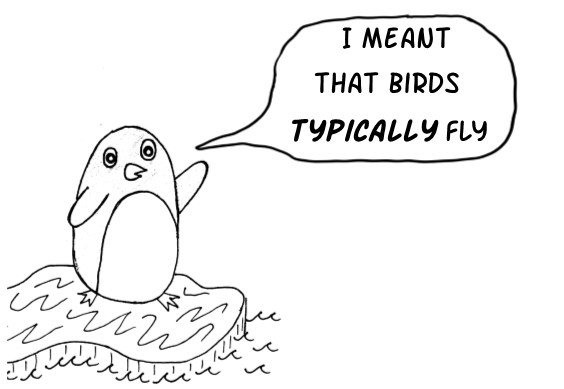
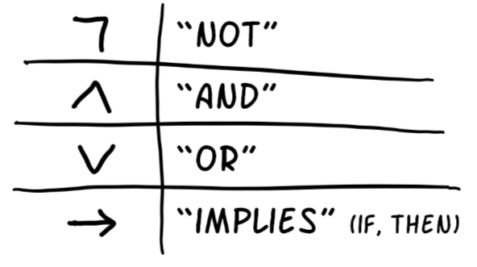
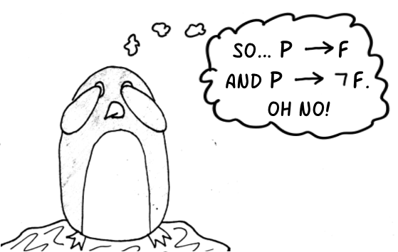
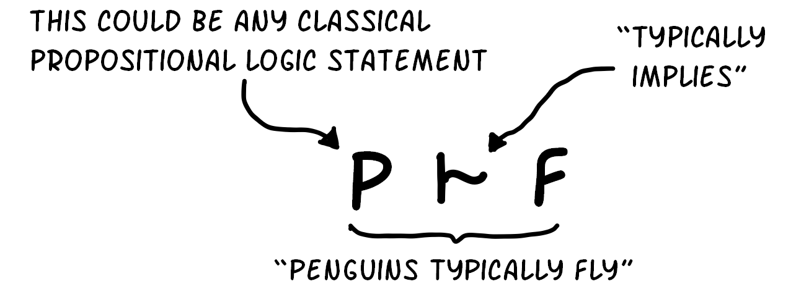
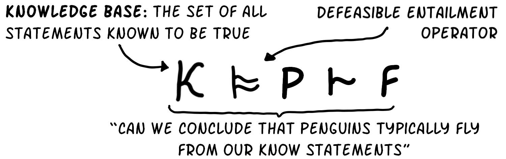
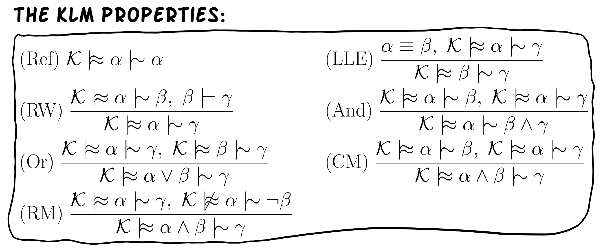
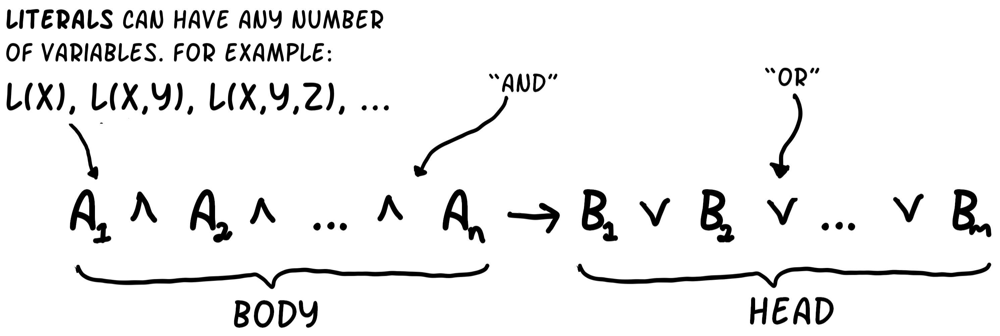
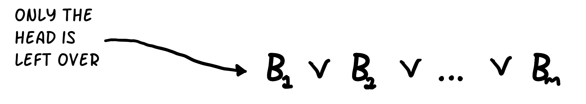

![Comic strip. Frame 1: Two penguins see birds flying; penguin 1 (Pecky) says 'Birds can fly and penguins are birds';
penguin 2 says 'So, penguins can fly'. Frame 2: Penguin 2 jumps off the cliff and cannot fly. Frame 3: Penguin 1 looks
down to the bottom of the cliff and remarks 'So, penguins cannot fly'; a textbox reads 'But, penguins are birds so they
must fly. So, penguins can and cannot fly, which is impossible. Sooo... no penguins exist!'. Frame 4: Penguin 1 disappears;
a textbox reads 'Moral of the story: Not all birds fly. Birds typically fly.'](images/comic-penguins-column.png)
Introduction
The Knowledge Representation and Reasoning approach to Artificial Intelligence uses logics to represent knowledge and automated reasoning methods to draw new conclusions from that knowledge. In classical (monotonic) reasoning systems, all information is certain and adding new information does not change the conclusions that you could previously draw.
Pecky the penguin used a classical reasoning system. When she added the fact that "penguins do not fly" to her knowledge base, this conflicted with the fact that she could already conclude that "penguins do fly" based on previous knowledge.So, the only way for both these statements to be true was if no penguins existed. And, so Pecky ceased to exist. Pecky's predicament shows that classical reasoning can be too weak to model certain systems. 
Defeasible (non-monotonic) reasoning systems would allow Pecky to say "birds typically fly". Then, when Pecky adds the extra information that "penguins do not fly", the system would retract its previous conclusion that "penguins do fly". Pecky would still exist if she used this "common sense" approach to reasoning.
Background
Propositional Logic
Propositional logic is a simple logic which uses classical reasoning. It uses symbols to represent base statements that can be assigned a value of true or false. Boolean operators are used to combine these base statements to form more complex statements. 
Pecky uses the symbols p, b and f to represent penguins, birds and flying, respectively. Then, Pecky combines
these symbols using boolean operators to make the statements "birds can fly", "penguins are birds" and
"penguins can not fly".

Truth tables can be used to define the meaning of each boolean operator. And, those meanings are used to reason about propositional statements. The most common question we want to answer is: "Can we conclude that a new statement is true based on the statements that we already know to be true?" This is known as classical entailment.
 Using truth tables (or more efficient semantic tableau methods), Pecky can still logically conclude that "penguins can fly". But, Pecky already knows that "penguins are not fly'ers" and it is impossible for both of these statements to be true. So, Pecky does not exist. To solve this problem we need to make propositional logic defeasible.
The KLM Approach
The KLM approach, proposed by Kraus, Lehmann and Magidor, is a well-supported approach to defeasible reasoning. It allows us to represent statements such as "penguins typically fly" using a defeasible implication operator. Statements of this form are known as defeasible statements and normal propositional logic statements are known as classical statements.
We now want to be able to answer the question: "Can we conclude that a new defeasible statement is true based on the statements (both defeasible and classical) that we already know to be true?" This is known as defeasible entailment.
Unlike classical entailment, defeasible entailment is not unique. To address this the KLM approach provides a list of rationality properties, called the KLM properties. The properties should be satisfied by a suitable defeasible entailment method.
All of these properties have a fairly intuitive meaning. For example; the And property say that, if Pecky knows that "penguins can waddle" and "penguins can belly-slide", then Pecky should be able to conclude that "penguins can waddle and belly-slide".
Rational Closure
Rational closure is the most simple and intuitive way of defining defeasible entailment. There is a semantic definition of Rational Closure and an equivalent algorithmic definition. For this project we use the algorithmic definition as the sole definition of Rational Closure.
This algorithm is split into two distinct sub-algorithms: Base Rank and Rational Closure. (A detailed, formal description of these algorithms is found in the full paper.) The Base Rank algorithm ranks all known statements according to typicality. Intuitively, more general statements will appear higher up in the ranking and more specific statements will appear lower down.
The Rational Closure algorithm uses the ranking of known statements to check whether we can conclude our the query statement from the known statements. When the left-hand side of our query statement is false, according to known statements, then the query statement is trivially true. So, we remove the least typical layer in the ranking, since some of the statements in this layer must be causing the left-hand side to be false.
When the left-hand side of our query statement is true, given the remaining ranked statements, then the query statement may be false. So, we need to check whether the query statement is true, given the remaining statements. If it is then we can conclude that it is true in our world; otherwise we conclude that the query is false.
Disjunctive Datalog
Datalog is a more expressive logic than propositional logic. It allows us to represent statements about specific individuals as well as generic concepts, which can be associated with many individuals. For example; Pecky can now say that "Pecky is a penguin" or "for all X, X is a penguin".
Datalog is a made up of rules and facts. Facts provide information about the world and rules allow us to deduce facts from other facts. Disjunctive Datalog rules have the following form:
Facts are rules without a body (the left-hand side). Disjunctive Datalog facts have the following form:
The boolean operators used in Datalog have the same intuitive meaning as for propositional logic. Rules intuitively mean that, whenever every statement between "and" symbols on the left-hand side of the rule are true, then at least one of the statements between "or" symbols on the right-hand side are true. Facts mean that at least one of the statements between "or" symbols are true.
 Using Datalog, Pecky can now say that "Pecky is a penguin", "For all X, if X is a penguin then X waddles or
slides" or "For all X, if X is a penguin and lives in the Nothern Hemisphere then X is a Galapogos
penguin". However, Pecky cannot use Datalog to say that "For all X, if X is a bird then X typically flies".
KLM-style defeasible reasoning needs to be extended to Datalog in order for Pecky to make these type of
statements in Datalog.
Using Datalog, Pecky can now say that "Pecky is a penguin", "For all X, if X is a penguin then X waddles or
slides" or "For all X, if X is a penguin and lives in the Nothern Hemisphere then X is a Galapogos
penguin". However, Pecky cannot use Datalog to say that "For all X, if X is a bird then X typically flies".
KLM-style defeasible reasoning needs to be extended to Datalog in order for Pecky to make these type of
statements in Datalog.
Objectives
The primary objective of the project is to extend KLM-style defeasible reasoning to Disjunctive Datalog. This is achieved by:
- Finding and justifying an extension of the KLM properties for Datalog. (Joint work)
- Finding a satisfactory extension of the Rational Closure algorithm for Datalog and proving that it satisfies the KLM properties for Datalog. (Joint work)
- Finding a satisfactory extension of the Relevant Closure algorithm for Datalog and proving that it still does not satisfy all of the KLM properties for Datalog. (Morris)
- Finding a satisfactory extension of the Lexicographic Closure algorithm for Datalog and proving that it satisfies the KLM properties for Datalog. (Ross)
Defeasible Disjunctive Datalog
To be able to express the KLM properties, we adapted the syntax of Datalog and used first-order logic semantics to build an equivalent representation of them for Datalog. We refer to the final version of Datalog we constructed as "Datalog+". This was done since we want to capture how reasoning should operate, even if one cannot express such statements in Datalog.
We adapted the algorithms for computing defeasible entailment to Datalog. In the algorithms, the only functions we assumed we had access to were classical entailment checking of rules, and basic set manipulation.
Conclusions
KLM-style defeasible reasoning can be extended to Disjunctive Datalog. In particular:
- The KLM properties can be extended to the Datalog case by using an extended version of the Datalog logic to express the properties. The extension retains the intended meaning of the original properties. (Joint work)
- The extended Rational Closure algorithm satisfies the KLM properties for Datalog. (Joint work)
- There is an extension of the Relevant Closure algorithm for Datalog. However, as found for the propositional case, the algorithm does not satisfy all of the KLM properties for Datalog. (Morris)
- The extended Lexicographic Closure algorithm satisfies the KLM properties for Datalog. (Ross)
Resources
For further project details, please see the following project documentation:
-
Matthew Morris
-
Tala Ross
-
Overall Project
Team
-
Matthew Morris
Author
-
Tala Ross
Author
-

Tommie Meyer
Supervisor